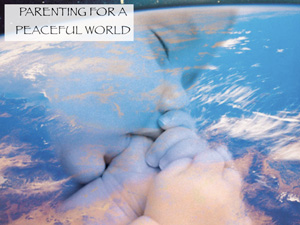
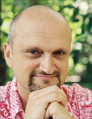

pagoda shell
photograph by
Chris Raggatt
Seminars
Since releasing his first book "Parenting For A Peaceful World" in 2005, Robin Grille has been invited to speak for many different organisationsand panels both nationally and internationally. Now he is delivering his expertise through a number of different seminars, workshops and courses which are available for booking. Here are some examples:
- Getting Your Child To Do Stuff
- Helping Your Children Heal From Emotional Wounds.
- Parenting Heart to Heart - a course for Mothers and Fathers.
- Parenting for A Peaceful World.
- Attachment, the Brain, Human Happiness
- Connecting with your toddler and child – setting boundaries without punishment, shaming or manipulation
- When Parents Were Children; A workshop for mothers and fathers
- Love, Fear and Shame in Education - A thought-provoking seminar about revolutionary approaches to education that enhance learning and self-motivation, while dramatically reducing violence in schools.
Robin is available for public speaking on the topics of his book and his practise. Contact info@our-emotional-health.com
GETTING YOUR CHILD TO DO STUFF – A psychobabble-free look at what really motivates children
All across the world, it seems we hear the cry of a universal parent saying “how do I get my child to…” (you fill in the blank). Does this sound like you? You’re not alone! It could be the drag of getting ready for school in the morning, bedtime battles, fussy eating, homework blues, picking up the toys (or not!), bath-time recalcitrance, allergy to chores…There are many motivational arrests that drive parents to question: Can I really get my child motivated? Am I missing something...?
Good news. Our understanding about human (and child) motivation has undergone a revolution. There is a huge amount we can do to help our children to mobilize. Not out of fear. Not for a pat on the head. Not for a ‘gold star’. But because they WANT to help you, because they WANT to learn, grow and be empowered. In this talk Robin Grille will support you to reclaim your power as a parent and discover the key to your child’s self motivation. He will take a deep look at how to unlock your child’s motivation and most importantly he will share ideas on how to have fun in the process. Bring your questions along to this event to make the most of engaging with Robin Grille and other parents in your community.
HELPING YOUR CHILDREN HEAL FROM EMOTIONAL WOUNDS
From time to time every child experiences something frightening, sad or painful.
Difficult feelings, even post-traumatic stress, can sometimes linger and resurface. These days there is so much information available about what helps children develop – but sometimes this information can be a little scary. We feel ever more pressured as parents to ‘get it right’. Many parents are worried by the implications of the new child-development sciences, and wonder fretfully: ‘have I caused some damage to my child?’
There are simple but very powerful steps we can take as parents to help our children to heal from the wounds and disappointments life sometimes brings. How do we help our children to heal, grow and move through?
In this workshop for parents, grandparents, child-carers, teachers and health practitioners, we will look at topics such as:
- Healing hurts that happened before your child learned to speak.
- Helping babies, toddlers, children and adolescents with their BIG emotions.
- Helping children at the heart level - even when there are painful circumstances beyond our control.
- Dealing with anger and blame.
- Parent-guilt: why we feel guilty sometimes, and how to let go and open up to learning new ways of relating.
Parenting Heart to Heart
"A course for Mothers and Fathers"
A Joyous Connection with your Baby
(six three-hour sessions)
PARENTING HEART TO HEART, Part II:
A Joyous Connection with your Toddler & Child
(six three-hour sessions)
These courses are designed to make parenting more pleasurable and effortless - while securing for your children a lifetime of emotional health and loving relationships. Course content includes:
- Leading-edge child development information
- Nurturing your child's emotional health
- How to take care of parents' emotional wellbeing
- Understanding our own childhood: the most powerful tool for effective and connected parenting
- Understanding tantrums and childhood emotionality - supporting children without punishment, shaming or manipulation.
- Practical guidelines for setting boundaries assertively (non-punitively).
- A more joyous parenting journey, through co-operative parenting
- The power of creative play - for emotional health, enhanced cognition and brain development
To find out about the next course dates, please visit the Heart to Heart Parenting blog.
Seminar 1
"Parenting for a Peaceful World"
Robin Grille invites you on a journey that begins with the surprising and often shocking history and evolution of parenting. With the aid of recent revolutionary discoveries about early childhood development and the human brain, the history of childhood offers vital clues about the roots of human violence and social disharmony.
This inspirational lecture, based on Robin Grille’s book of the same title, will provide a fascinating look at parenting customs that have
shaped societies and major world events, revealing how children adapt to parenting styles and how these experiences underpin the adults they become and, ultimately, the way the world is structured.
Robin Grille draws upon revolutionary new research to argue that safeguarding children’s emotional development is the key to creating a more peaceful and harmonious world.
Robin emphasizes that our future rests on the way we care for parents, and the way we treat children. This presentation takes you from past horrors to present hope. You will learn how recent fundamental changes in child-rearing approaches have shifted human consciousness, giving birth to modern movements for human rights, justice, democracy, equality and sustainability. You will also learn how these universal issues impact on the way that we work with young children and their families.
Certainly, there is much more work to do. But what would the future hold for humanity if these positive reforms in child-rearing continue to grow? What is your personal role in this unfolding global movement?
Seminar 2
“Attachment, the Brain, Human Happiness”
In this workshop we will look at the explosion of scientific research around the world in child development, emotional intelligence, brain development and the human heart. Never before has so much been known about how childhood experiences shape the adults we become, and this new knowledge is revolutionising the way we understand our babies and children. Parenting and child care are undergoing great changes in the wake of these discoveries. This presentation will place you at the forefront of these changes.
In this presentation you will learn:
- How your affection literally grows your child’s brain!
- How to give your baby and child the most emotionally secure start in life
- The key early childhood experiences that promote your child’s emotional intelligence
- How healthy emotional development ensures your child’s physical health – for the long term
This presentation is for parents, grandparents, child health professionals, early childhood teachers and carers.
Seminar 3
Connecting with your toddler and child
– setting boundaries without punishment, shaming or manipulation
In this workshop we will look at how we can connect with our children and set strong boundaries without relying on punishment, shaming and rewards.
- A brief history of punishment and shaming
- Why smacking and other forms of punishment are ineffective
- Being effective and being assertive means being ‘real’
- Learn appropriate expression of your (the parent’s) needs and limits
- Active listening
- The key ingredients of a deep connection with your child
This presentation is for parents, grandparents, child health professionals, early childhood teachers and carers.
WHEN PARENTS WERE CHILDREN
A workshop for mothers and fathers, with Robin Grille
Author of Parenting for a Peaceful World (Longueville Media) and Heart to Heart Parenting (ABC Books)
You may not know it, but your own life as a child is one of the strongest influences on how you parent today.
Do you remember what it felt like to be a child? Are there some memories you'd rather forget? Some memories that bring you joy? The emotional paths you trod as a child hold a treasury of wisdom. Just to touch lightly upon the emotions of childhood can help you immensely to:
- Understand your own child better, from the inside
- Free you from repeating old inherited behaviour patterns
- Intuit what your baby and child is asking for and know how to meet his/her emotional needs
- Help your child to trust you and listen to you
- Help your child to feel heard, seen and secure
- Heal old emotional wounds and bring more joy to parenting
- Deepen your sense of connection to others and to your community
In this workshop you will be shown ways to safely tap into the wisdom of your 'inner child', and gain much trust in your inner knowing about how to respond to your child. This process can be very freeing, empowering, healing for you and richly enhancing of your relationship with your child.
Love, Fear and Shame in Education
A thought-provoking seminar about revolutionary approaches to education that enhance learning and self-motivation, while dramatically reducing violence in schools.
This thought-provoking workshop is about an education revolution that is sweeping the world and transforming the classroom as we know it. You will discover that a new educational paradigm, based on collaboration, intrinsic motivation and children’s individual interests, is having an unexpected result: it sharply reduces the incidence of bullying and school violence.
Topics we will explore:
- What is the most powerful motivating force for learning?
- The power of play-based education
- What are some of the many, diverse examples of child-centred education and emergent curricula around the world, and what defines them?
- How widespread is the new phenomenon of child-centred (emergent) curricula around the world?
- The role of emotional intelligence in new education models
- The effects of shame in competition-based models
- How gold stars and other reward systems harm learning – and why educational psychologists don’t tell us!
- Why student participation in curriculum design reduces violence and other behavioural problems in and out of the classroom
For a list of previous engagements, click here

Robin Grille; father, psychologist,
psychotherapist, author and musician.

Parenting Heart to Heart talks warmly and straightforwardly to the parent. It powerfully supports the reader to access the deepest love and connection that comes from nurturing relationships.
This book has given me a simple yet invaluable process to live by, and pass on to the many generations of parents and children in my life and beyond
Sofi Thomson; C.A.R.E. Parent Support Program, Byron Shire, Northern New South Wales

"Stunning, absolutely fascinating! You'll
never think about childhood the same way again..."
Sandy McCutcheon, ABC Radio National
Emotional Intelligence :: Publications :: Counselling Services :: About Robin Grille :: Contact :: Links :: Home
Our Emotional Health web site built by Slam; best viewed at minimum 800x600 resolution. Copyright 2005